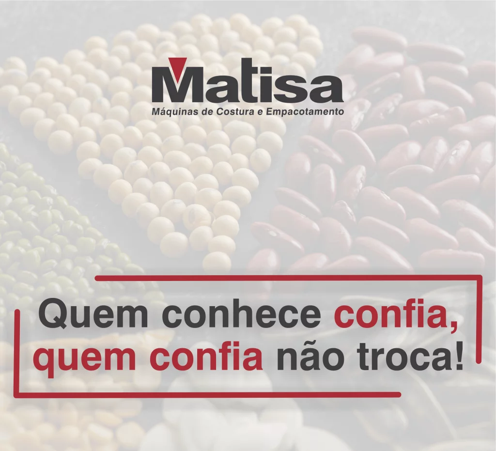

<section class="home">
<div class="empresa">
  <div class="empresa-imagem">
    
  </div>
  <div class="empresa-sobre">
    <div class="empresa-sobre-content">
      <h1>MATIZA</h1>
      <p>A Matisa escreve a sua história com a experiência de mais de 60 anos de existência. Começou suas atividades no ano 1959, na cidade de Limeira – SP e hoje presta atendimento em todo mercado nacional e Internacional, estamos presente em mais de 90 países provendo soluções inovadoras em equipamentos para ensaque, empacotamento e fechamento de sacarias.
        Temos em nosso portfólio cabeçotes de costuras de costura industrial, seladoras, empacotadoras automáticas, elevadores e transportadores.<br/>
        Atendemos em diversos seguimentos como setores alimentícios, pet-food, grãos, açucareiro, químico, farmacêutico, materiais para construção. Com garantia e suporte, temos assistência técnica qualificada e facilidade em adquirir peças de reposição que é 100% nacional.</p>
    </div>

  </div>
</div>
</section>


